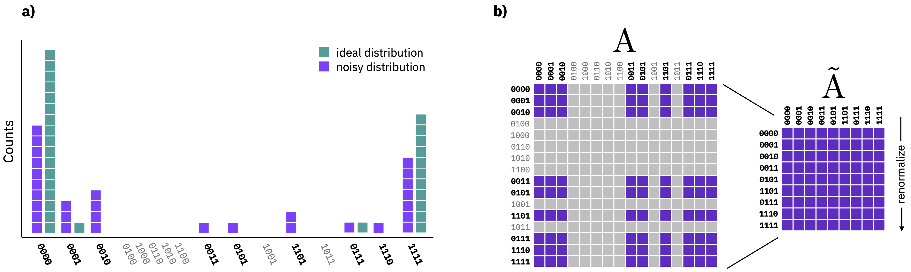

Mesurement error mitigation#
Overview#
On superconducting platforms such as IBM Quantum systems, measurements have one of the highest (it not the highest) error rate per operation of any instruction. Although quantum circuits often contain many more gates than measurements, the output of a quantum computer relies on qubit measurement, making the correction of these operations an important task for achieving high-fidelity results. Fortunately, techniques have been developed that make mitigating these errors, on average, computationally feasible. However, as with all mitigation methods, the cost is an increase in the variance of the computed observables; requiring an increase in the number of circuit executions needed for recovering the initial variance. Here we will look at the “M3” method that the Runtime uses to mitigate errors in the Sampler primitive.
M3 Paper: PRX Quantum 2, 040326 (2021)
Setup#
# Standard imports
import numpy as np
from qiskit import *
# Load stuff needed for this notebook
from qiskit.quantum_info import Statevector, hellinger_fidelity
from qiskit.providers.fake_provider import FakeProvider
from qiskit.result import sampled_expectation_value
# IBM Quantum Runtime account and primitives
from qiskit_ibm_runtime import QiskitRuntimeService, Sampler
# Plotting stuff to look better
import matplotlib.pyplot as plt
%config InlineBackend.figure_format = 'retina'
try:
plt.style.use('quantum-light')
except: pass
Lets load our IBM Quantum account and grab a real system:
service = QiskitRuntimeService()
backend = service.get_backend('ibm_cleveland')
sampler = Sampler(backend)
Background#
Although the power of quantum computation lies in the ability to create large amounts of entanglement and explore large swaths of Hilbert space, at the end of the day the result encoded in the terminal quantum state must be converted to classical information by measuring the qubits. Note that there is also the possibility of mid-circuit measurements, but we will not address those here.
When measureing a qubit, there are two error rates that quantify the noise:
\(P_{10}\): Probability of qubit in the \(0\) state but measuring \(1\).
\(P_{01}\): Probability of qubit in the \(1\) state but measuring \(0\).
The probabilities of correctly measuring the qubit in the 0 and 1 states are thus \(P_{00}=1-P_{10}\) and \(P_{11}=1-P_{01}\), respectively.
props = backend.properties()
P01 = props.qubit_property(0, 'prob_meas0_prep1')[0]
P10 = props.qubit_property(0, 'prob_meas1_prep0')[0]
Assuming the measurement error for each qubit is uncorrelated with that of other qubits, we can define an Assignment, “A-matrix”, for each qubit:
# Build the "Assignment" matrix
A0 = np.array([[1-P10, P01],
[P10, 1-P01]])
A0
array([[0.9646, 0.0406],
[0.0354, 0.9594]])
fig, ax = plt.subplots(figsize=(4,4))
im = ax.matshow(A0)
ax.grid(False)
# Coordinates for annotations are (x,y) NOT matrix (row, col)
ax.annotate('$P_{00}$', (0,0), fontsize=16, ha='center', va='center')
ax.annotate('$P_{11}$', (1,1), fontsize=16, ha='center', va='center')
ax.annotate('$P_{01}$', (1,0), fontsize=16, ha='center', va='center', color='white')
ax.annotate('$P_{10}$', (0,1), fontsize=16, ha='center', va='center', color='white')
ax.set_xticks([0, 1])
ax.set_xticklabels(['$|0\\rangle_{\\rm in}$', '$|1\\rangle_{\\rm in}$'])
ax.set_yticks([0, 1])
ax.set_yticklabels(['$|0\\rangle_{\\rm out}$', '$|1\\rangle_{\\rm out}$'])
fig.colorbar(im, shrink=0.8);
The interpretation of the A-matrix is as follows. The column indices label the target bit-string state, while the row indicates what you actually got in your experiment. Thus we see that the matrix elements \(P_{ij}\) tell us the probability of starting in state \(j\), but ending up in state \(i\). Typically \(P_{01} > P_{10}\) because relaxation of the \(|1\rangle\) state to the \(|0\rangle\) is the dominante source of error. Notice that the sum over all the elements of each column is 1; an input bit-string has to go somehwere.
The average of the two error rates, \(P_{01}\) and \(P_{10}\), is called the readout_error and it is also reported by the backend for each qubit:
props.qubit_property(0, 'readout_error')
(0.038000000000000034,
datetime.datetime(2023, 7, 27, 0, 43, 42, tzinfo=tzlocal()))
Lets take a look at the distribution of these values over a full system:
meas_errors = [props.qubit_property(qubit, 'readout_error')[0]
for qubit in range(backend.configuration().num_qubits)]
print('Median:', np.median(meas_errors))
print('Mean:', np.mean(meas_errors))
Median: 0.02540000000000009
Mean: 0.03398267716535433
fig, ax = plt.subplots()
ax.hist(meas_errors, bins=27)
ax.set_xlabel('Error rate');
ax.set_ylabel('Counts');
We see that the error rates can vary by and order of magnitude over a quantum chip. Therefore qubit selection and ultimately readout mitigation is needed to reduce the impact of measurement imperfections. How to do this is the topic of the next section.
Mitigating measurement errors#
The A-matrix leads us to a very simple linear expression for how measurement errors affect our output probability distribution:
where \(\vec{p}_{\rm ideal}\) is a vector representation of the ideal distribution (including gate errors) over all computational basis states, and \(\vec{p}_{\rm exp}\) is the actual distribution we measured in the experiment. This equation is valid for not just a single qubit, but any number of measured qubits, but the dimensionality of the full linear system of equations grows exponentially in the number of qubits. Assuming readout out errors are independent, the full A-matrix takes the form: \(A=A_{n-1}\otimes\dots\otimes A_{1}\otimes A_{0}\)
The equation above is a linear equation of the form \(A\vec{x}=\vec{b}\), where we are solving for the unknown vector \(\vec{x}=\vec{p}_{\rm ideal}\). Let try solving it for a very simple example:
qc = QuantumCircuit(1)
qc.x(0)
qc.measure_all()
# Here we are using "seed_simulator" to fix the output
probs = sampler.run(qc, shots=1e4, seed_simulator=12345).result().quasi_dists[0]
probs
{0: -0.0021657288588431025, 1: 1.002165728858843}
Need to convert our dictionary to an array:
probs_vec = np.array([probs.get(0, 0), probs.get(1, 0)], dtype=float)
probs_vec
array([-0.00216573, 1.00216573])
np.linalg.solve(A0, probs_vec)
array([-0.04628326, 1.04628326])
After running the above code you should see that the probability of getting '1' is nearly 1.0. In fact it can be even larger than 1, with a negative probability for being found in the '0' state! This is not an error or bug, but rather a consequence of the fact that there are fluctuations in sampling statistics that can lead to over- or under-correction. The output from measurement mitigation is a wider class of distibutions known as quasi-probability distributions; Distributions that can contain negative values, but never the less sum up to one. This fact raises an important limitation on what we can do with these distributions; Quasi-probability distributions can only be directly used to compute expectation values of observables or finding the most probable bit-string. They cannot be used, for example, for computing the fidelity of the result against a known answer.
Measurement mitigation with M3#
Given the realatively high error rates of measurements on superconducting processors, we would like to suppress these errors as much as possible. Now, we could naively find the A-matrix corresponding to each measured qubit and take the tensor product of them all. However, this leads to a \(2^{N}\times 2^{N}\) matrix that is tractible for only a small number of qubits, e.g. \(\lesssim 18\). In order to correct large numbers of qubits we need to be a bit smarter than this.
The M3 (Matrix-free Measurement Mitigation) is one example that looks at the problem in a different way.

Namely, M3 considers the fact that, when measurement errors are small, the effect is to take small amounts of probability away from the correct output bit-strings and move them to erroneous bit-strings that are close in terms of Hamming distance. Because the errors are weak, with sufficient sampling, it is unlikely that an ideal bit-string is completely redistributed; the correct answer is a subset of the noisy output. This insight indicates that we can truncate the full A-matrix into one that has a dimension that is equal to the number of unique bit-strings in the output. This equation is typically much much smaller than the full A-matrix, and thus easier to solve, e.g. via LU decomposition or iterative methods.
M3 measurement mitigation can be broken into 3 steps:
Construct a mitigator targeting a backend (
backend).
Use the mitigator
mitto calibrate over a list of physical qubits (qubits) measured
Generate a corrected set of quasiprobabilities from a given set of noisy counts data
We can then use these quasiprobabilities to evaluate problems such as those for sampling algorithms, which is why it is in the Sampler, and / or algorithms that compute expectation values (but in the Runtime, that is a different method).
Example#
To begin, let us consider our usual all-ones BV circuit:
def bv_ones_circs(N):
qc = QuantumCircuit(N, N-1)
qc.x(N-1)
qc.h(range(N))
qc.cx(range(N-1), N-1)
qc.h(range(N-1))
qc.barrier()
qc.measure(range(N-1), range(N-1))
return qc
N = 5
bv_circ = bv_ones_circs(N)
bv_circ.draw('mpl')
We want to see how performing readout-mitigation improves the probability of getting the all-ones bit-string. Here we will use resilence_level, which controls how much mitigation is applied to the result. The default resilence_level=1 uses readout mitigation, so lets first turn it off:
no_mit_probs = sampler.run(bv_circ, shots=int(1e4), resilience_level=0).result()
The success rate is found to be:
no_mit_probs.quasi_dists[0][15]
0.8669
We can now turn the resilience_level back to its default value and see what happens:
mit_probs = sampler.run(bv_circ, shots=int(1e4), resilience_level=1).result()
mit_probs.quasi_dists[0][15]
0.9091882355714604
The difference is not super large here as our circuit is being re-mapped by the transpiler and our problem is small.
Lets extend the problem size, and record what the most likely bit-string value is, and its corresponding probability:
def most_likely_bitstring(dist):
"""Return the most likely bit-string from a distribution
Parameters:
dist (dict_like): Input distribution
Returns:
str: Most likely bit-string
float: Bit-string probability
"""
max_bitstring = None
max_prob = 0
for key, value in dist.items():
if value > max_prob:
max_prob = value
max_bitstring = key
return max_bitstring, max_prob
We will now make a list of BV circuits of increasing size, and see how performing mitigation works as we scale up the problem:
bv_circs = [bv_ones_circs(N) for N in range(2, 13)]
no_mit_bv_probs = sampler.run(bv_circs, shots=int(1e4), resilience_level=0).result()
[most_likely_bitstring(cnts.binary_probabilities()) for cnts in no_mit_bv_probs.quasi_dists]
[('1', 0.9818),
('11', 0.9323),
('111', 0.9348),
('1111', 0.8471),
('11111', 0.7168),
('111111', 0.5829),
('1111111', 0.4017),
('11111010', 0.2696),
('111111110', 0.1725),
('1111101111', 0.1799),
('11111001111', 0.062)]
Once again we turn the mitigation back on:
mit_bv_probs = sampler.run(bv_circs, shots=int(1e4), resilience_level=1).result()
[most_likely_bitstring(cnts.binary_probabilities()) for cnts in mit_bv_probs.quasi_dists]
[('1', 0.9888733206956232),
('11', 0.971596046696751),
('111', 0.9828151838340594),
('1111', 0.9285202008610656),
('11111', 0.7734574425161226),
('111111', 0.8108054515180869),
('1111111', 0.5884491856463089),
('11111111', 0.6180686511018155),
('111111100', 0.3434415100797467),
('1111111101', 0.0943411225172675),
('11111111100', 0.19607827563420294)]
import qiskit.tools.jupyter
%qiskit_version_table
Version Information
| Qiskit Software | Version |
|---|---|
qiskit-terra | 0.24.2 |
qiskit-aer | 0.12.2 |
qiskit-ibmq-provider | 0.20.2 |
qiskit | 0.43.3 |
qiskit-nature | 0.6.2 |
qiskit-machine-learning | 0.6.1 |
| System information | |
| Python version | 3.11.4 |
| Python compiler | Clang 15.0.7 |
| Python build | main, Jun 10 2023 18:08:41 |
| OS | Darwin |
| CPUs | 8 |
| Memory (Gb) | 16.0 |
| Thu Jul 27 06:34:25 2023 EDT | |